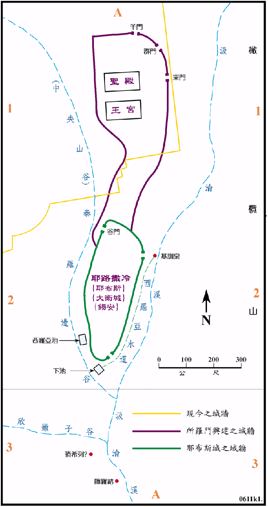

1010～930BC

行动线说明
| 圣经 | 说明 |
|---|---|
| 王上1:5-9 | 亚多尼雅在隐罗结旁宴客，自立为王。 |
| 王上1:28-40 | 大卫令在基训泉由祭司膏所罗门为以色列王 (970BC)。 |
| 王上2:10-11 | 大卫王去世，共作王四十年 (1010-970BC) |
| 王上6:1 | 所罗门王登基后第四年，开始建圣殿，七年后完工 (959BC)。 |
| 王上7:1-12 | 接着所罗门又为自己建造宫室，十三年方造成。(946BC) |
| 王上7:13- | 所罗门召户兰来为圣殿铸造铜和金银的各式器皿。 |
| 王上8:1-66 | 圣殿建 和器皿制造完成，以色列人将约柜从大卫城运来，抬进内殿，就是至圣所，又献祭为民祝福。 |
| 王上10:26-29 | 所罗门王建军，又聚集财物。 |
| 王上11:7 | 所罗门年老时，在耶路撒冷对面的山上为外邦的神建 邱坛和烧香献祭。 |
| 王上11:42-43 | 所罗门在耶路撒冷作王四十年 (970-930BC)，他去世后，他的儿子罗波安接续他作王。 |
耶路撒冷在大卫占领之前，原名是叫耶布斯，位於俄斐勒的山头，东有汲沦溪，西有泰罗边谷 (即是中央山谷)，南边有欣嫩子谷。三面谷底的深度都在40至70公尺之间，而且坡度还相当的陡峻，北方接摩利亚山，所以是一个易守难攻的军事据点。到大卫占领后就改名叫耶路撒冷，又称大卫城和锡安，作为他的首都，也是宗教的中心。大卫在位时间内，只对城区和城墙加以整建，到了所罗门时代，这才大兴土木，以二十年的时间在城的北方，就是摩利亚的山上建圣殿和王宫，将城区往北扩展了约700百公尺，这就是新的耶路撒冷。